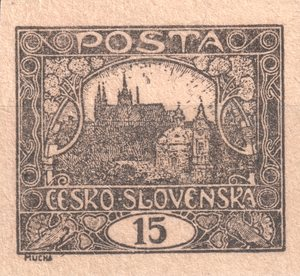
1Probedrucke
Bevor eine Druckform Marken für die Post zu drucken begann, wurden von ihr Probeabzüge gemacht. Sie dienten der Beurteilung von Zeichnung, Farbe und Anpressdruck — sie wurden deshalb in der Regel in einer anderen Farbe als die endgültige Ausgabe und auf besseres Papier gedruckt, damit zu sehen war, was die Form kann, und nicht, was das Papier zulässt. Für das heutige Studium der Platten haben sie besonderen Wert: Sie halten die Form in einem Zustand fest, in den die Abnutzung noch nicht eingegriffen hat, und manchmal noch bevor die letzten Änderungen an ihr vorgenommen wurden.
Feld 96/I — blauer Probedruck auf Kreidepapier
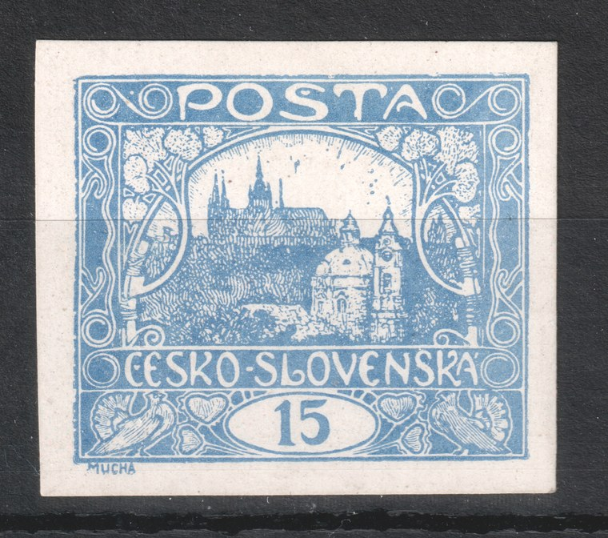
| Farbe | blau — eine Farbe, in der die Marke nie erschienen ist |
|---|---|
| Papier | Kreidepapier, glatt und weiß; gegenüber dem rauen Papier der regulären Auflage hält es eine wesentlich feinere Zeichnung |
| Ausführung | geschnitten, mit breiten Rändern |
| Markenfeld | 96 / Platte I |
| Zustand der Platte | der Druck ist auf der ganzen Fläche scharf — die Platte war noch nicht abgenutzt |
Der Unterschied zu einer gewöhnlichen Marke ist auf den ersten Blick zu sehen. Auf dem rauen Papier der regulären Auflage fließen die feinen Schraffuren der Bäume und Dächer zu Flächen zusammen, auf Kreidepapier bleiben sie getrennt. Dasselbe gilt für die Umrisslinien des Ornaments: Auf Produktionsstücken sind sie meist verbreitert oder unterbrochen, hier sind sie dünn und durchgehend. Der Probedruck dient deshalb nicht nur als Sammlerrarität, sondern als Referenzbild — er zeigt, wie die Zeichnung aussah, bevor Abnutzung der Platte und Eigenschaften des Papiers ihr etwas wegzunehmen begannen.
Vergleich mit dem Produktionsstück vom Feld 96/I
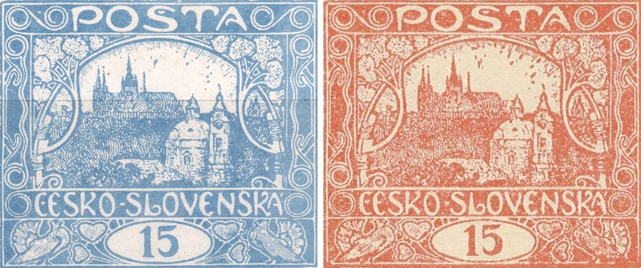
Zwischen dem Probedruck und der Produktion wurde auf diesem Feld in die Zeichnung eingegriffen. Es handelt sich also nicht nur um einen Unterschied in der Schärfe: Die Form wurde zwischen beiden Abdrucken noch überarbeitet. Belegt sind zwei Änderungen.
1 · Retusche der Spirale — von Is zu IIs
Die entscheidende Spirale liegt in der linken oberen Ecke der Zeichnung — es ist die linke des Spiralenpaares im Eckornament, dieselbe, die die Seite Typen der fünften Zeichnung als Typmerkmal beschreibt. Auf dem Probedruck ist sie offen (Is): Die innere Windung läuft aus und endet frei. In der Produktion ist sie geschlossen (IIs) — die Windung schließt sich zu einem vollen Ring. Der Spiraltyp ist bei diesem Feld also keine Eigenschaft des ursprünglichen Klischees, sondern das Ergebnis einer späteren Änderung — und das ist für das Lesen der Typen auf der ersten und zweiten Platte wesentlich. Eine Übersicht der Felder und beider Typen finden Sie auf der Seite Typen der fünften Zeichnung.
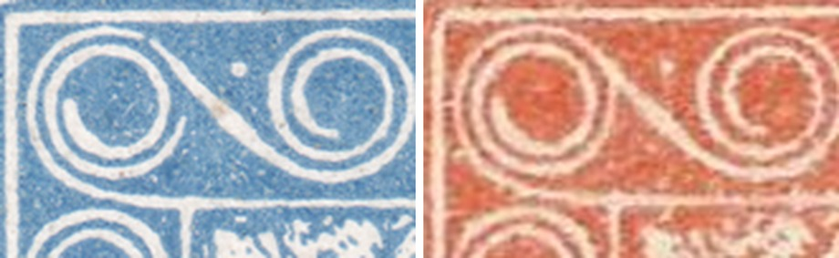
Daraus ergibt sich eine Frage, auf die wir bislang keine Antwort haben: Sind die neun Felder der Platte I, die die offene Spirale auch in der Produktion tragen (2, 21, 22, 23, 49, 83, 91, 92, 94), gerade jene Felder, an denen diese Änderung vorbeiging? Weitere Probedrucke derselben Platte könnten das beantworten.
2 · Änderung des Fächers bei der rechten Taube
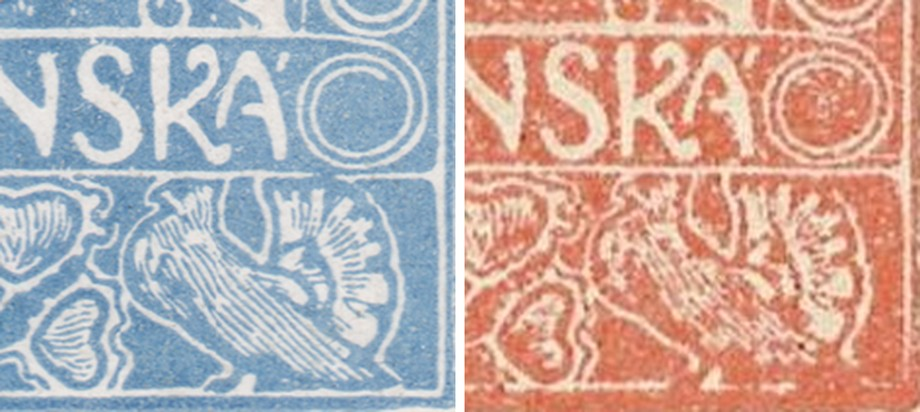
Der zweite Eingriff betrifft den Fächer rechts von der rechten Taube. Auf dem Probedruck sind die Strahlen des Fächers länger und deutlich voneinander getrennt; in der Produktion ist der Fächer anders gezeichnet. Ein Teil des Unterschieds geht auf das Papier und die Abnutzung zurück, doch der Umriss des Fächers weicht auch dort ab, wo der Abdruck in der Produktion noch lesbar ist.
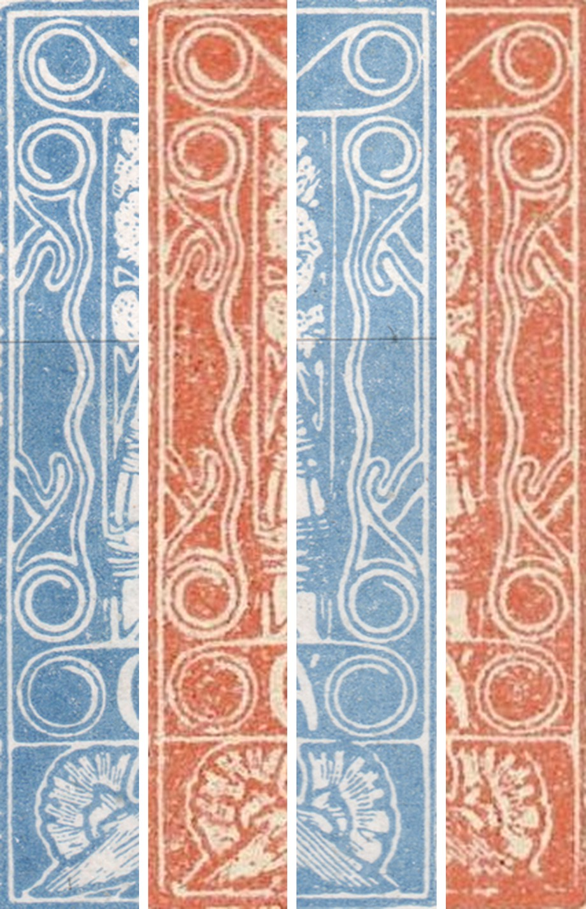
Feld 68/I — ein schwarzer Probedruck, der endgültige Zustand der Zeichnung
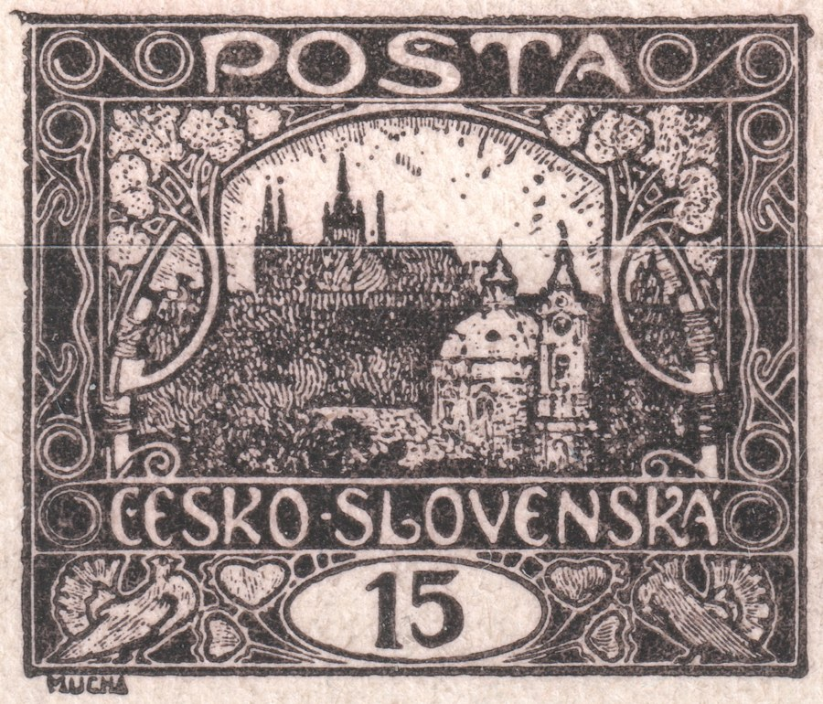
| Farbe | schwarz — eine Farbe, in der die Marke nie erschienen ist |
|---|---|
| Papier | cremefarben, fein strukturiert |
| Ausführung | ungezähnt |
| Markenfeld | 68 / Platte I |
| Zustand der Platte | stimmt mit dem Produktionsdruck überein — keine spätere Änderung der Zeichnung |
Im Gegensatz zu Feld 96/I ist dieses Feld der umgekehrte Fall. Im Vergleich mit dem Produktionsabdruck desselben Feldes (aus der Referenzsammlung der Positionen von Platte I) stimmt die Zeichnung bis ins letzte Detail überein — einschließlich einer kleinen Unregelmäßigkeit in der oberen linken Ecke des Rahmens, die Feld 68 als sein Erkennungsmerkmal auf allen Druckplatten trägt. Sie erscheint auf dem Probedruck ebenso wie auf dem Produktionsstück, sodass zwischen den beiden Abdrucken kein Eingriff in die Druckform erfolgte.
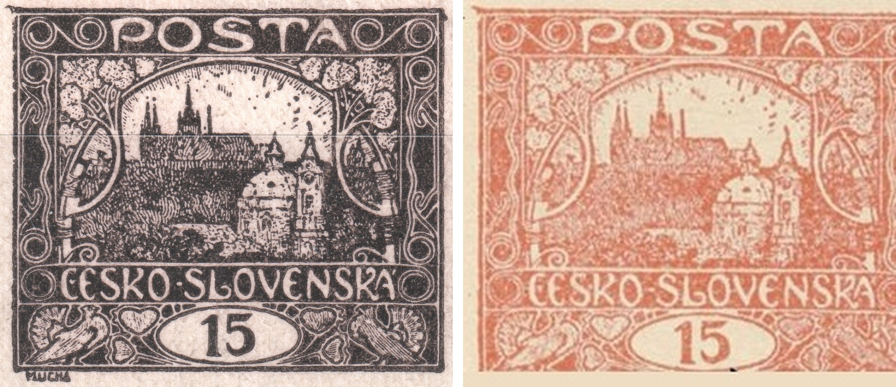
Feld 68/I ergänzt somit Feld 96/I von der anderen Seite: Bei 96/I hielt der Probedruck die Druckform noch vor zwei Änderungen fest, bei 68/I war die Druckform zum Zeitpunkt dieses Abdrucks bereits endgültig. Nicht alle Felder der Platte I befanden sich also zum Zeitpunkt der Probedrucke im selben Fertigstellungsstadium.
Ein vollständiger schwarzer Bogen — die Kontrollzahlen
Neben den einzelnen Probedrucken ist auch ein vollständiger Bogen (10×10 Felder) von POFIS 7 (der 15h) erhalten geblieben, vollständig in Schwarz gedruckt und ungezähnt — derselbe Zweck wie bei den übrigen Probedrucken, diesmal jedoch auf der Ebene eines ganzen Bogens statt eines einzelnen Feldes. Der Zeitraum 1918–1920 entspricht der Periode, in der die Bögen dieser Ausgabe die sogenannten Kontrollzahlen trugen.
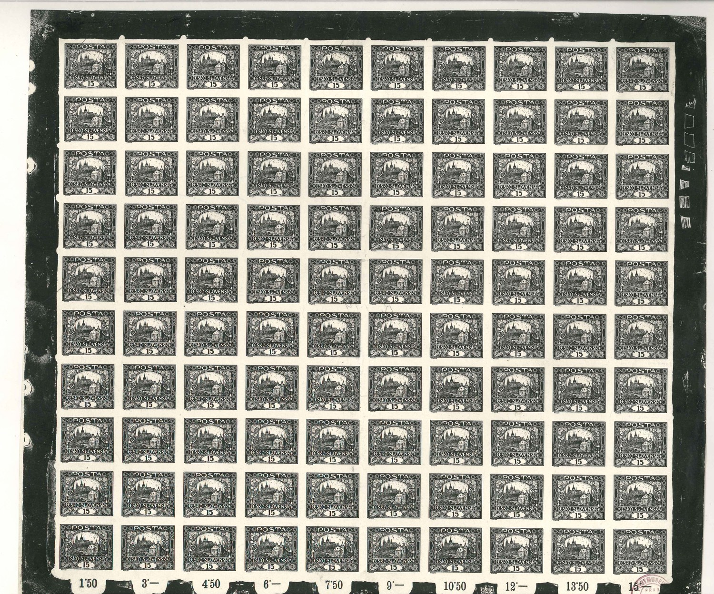
Die Kontrollzahlen sind fortlaufend steigende Summen, die unter jeder Spalte von zehn Marken aufgedruckt sind — 1.50, 3.-, 4.50, 6.-, 7.50, 9.-, 10.50, 12.-, 13.50, bis 15.- Kč für den gesamten Bogen (10 × 15h = 1,50 Kč pro Spalte). Ein Postbeamter konnte so überprüfen, dass im Bogen keine Marke fehlte, indem er lediglich die zuletzt aufgedruckte Zahl mit dem Preis des gesamten Bogens verglich, ohne die einzelnen Marken zählen zu müssen.
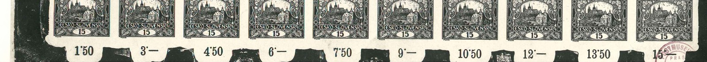
| Katalog | POFIS 7 (die 15h) |
|---|---|
| Druckplatte | VI |
| Zeitraum | 1918–1920 |
| Farbe | schwarz — eine Farbe, in der die Marke nie erschienen ist |
| Ausführung | ungezähnter Bogen, 10×10 Felder |
Farbprobedrucke
Bevor entschieden wurde, in welcher Farbe und auf welchem Papier gedruckt werden sollte, wurde dieselbe Form mehrmals probeweise abgezogen. Die folgenden Stücke stammen aus einer solchen Reihe: dieselbe Zeichnung, jedes Mal eine andere Farbe oder ein anderer Untergrund. Neben Schwarz und Braunschwarz gibt es hier Blau, mehrere Rottöne und einen Abzug auf rosafarbenem Papier.
Für das Studium der Druckplatten sind diese Abzüge gerade deshalb wertvoll, weil sie sauber sind — geschnitten, ungestempelt und sorgfältiger gedruckt als die Auflage. Die Zeichnung ist auf ihnen bis zum letzten Strich lesbar, sodass sie sich mit Auflagemarken desselben Bogenfeldes vergleichen lässt.
Braunschwarzer Probedruck auf gelblichem Papier, geschnitten.
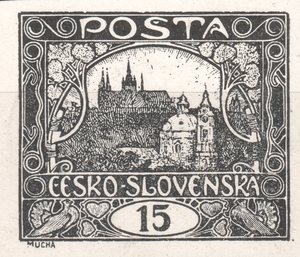
2Tiefschwarzer Probedruck auf weißem Papier, geschnitten — der schärfste Abzug der Gruppe; er hält selbst die feinste Gravur der Himmelsschraffur.
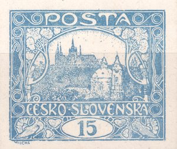
3Blauer Probedruck, geschnitten — Bogenfeld 6. Der Ton ist kühler und das Papier weißer als beim blauen Probedruck des Feldes 96/I oben.
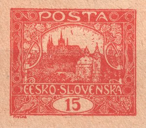
4Roter Probedruck auf gelblichem Papier, geschnitten — Bogenfeld 70.
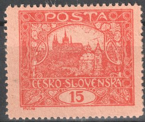
6Rotoranger Ton. Im Unterschied zu den übrigen Stücken der Gruppe ist er gezähnt.
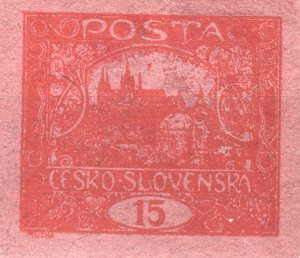
7Roter Druck auf rosafarbenem Papier, geschnitten — eine Probe des Papiers, nicht der Farbe.
Ein Klick vergrößert das Stück. Das Bogenfeld ist dort angegeben, wo es sich durch Vergleich mit der rekonstruierten ersten Druckplatte zuverlässig bestimmen ließ; bei den übrigen Stücken bleibt es offen.
Makulaturdruck
Makulatur ist Papier, das beim Druck verdorben wurde und die Druckerei nie hätte verlassen sollen. Sie entsteht vor allem beim Anfahren der Maschine, ehe Druck und Farbauftrag eingestellt sind: die ersten Bogen sind entweder kaum zu erkennen oder im Gegenteil in Farbe ertrunken. Solche Bogen wurden beiseitegelegt und sollten vernichtet werden; was von ihnen erhalten blieb, zeigt die Produktion in einem Augenblick, in dem sie noch nicht in Ordnung war.
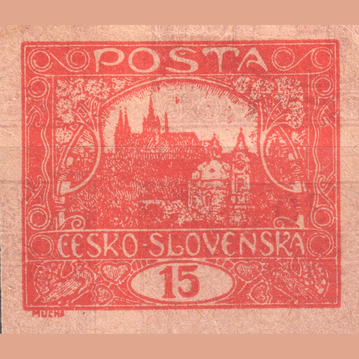
Worin sie sich vom verlaufenen Druck unterscheidet
Ein verlaufener Druck ist eine einzelne Marke mit Farbüberschuss, die in den Umlauf gelangte — ein Herstellungsfehler auf einem sonst ordentlichen Bogen. Makulatur ist ein ganzer als Ausschuss beiseitegelegter Bogen: die Überfüllung mit Farbe ist bei ihr keine Ausnahme, sondern gerade der Zustand, dessentwegen probeweise gedruckt wurde. Die Grenze zwischen beiden ist nicht scharf, und es entscheidet vor allem die Herkunft des Stückes, nicht sein Aussehen.
Makulatur ist keine Katalogvariante. Sie wurde nicht ausgegeben, hat keine postalische Gültigkeit, und ihr Wert ist dokumentarisch — sie zeigt, wie Druck außerhalb seiner Einstellung aussieht. Bei angebotenen Stücken ist deshalb die Frage nach der Herkunft angebracht: ohne sie lässt sich ein Makulaturbogen nicht von einer gewöhnlichen Marke mit stark verlaufenem Druck unterscheiden.
Warum Probedrucke für das Studium der Platten wertvoll sind
- Referenzzustand. Sie zeigen die Zeichnung, bevor die Abnutzung ihr etwas wegzunehmen begann. Alles, was auf einem Produktionsstück fehlt oder verbreitert ist, lässt sich an ihnen messen.
- Sie unterscheiden Retusche von Abnutzung. Wenn sich ein Objekt auf Probedruck und Produktion in der Form unterscheidet, handelt es sich nicht um Abnutzung — die Platte wurde zwischenzeitlich überarbeitet. Genau das ist der Fall der Spirale auf diesem Feld.
- Sie datieren die Entwicklung der Platte. Ein Probedruck ist ein fester Punkt vor dem Beginn der Produktion. Die Phasen der Plattenfehler, die die Website beim Sprung auf 11/II oder bei den Lichtstellen verfolgt, lassen sich von ihm aus ableiten.
- Sie prüfen nach, was ursprünglich ist. Bei einer strittigen Abweichung beantworten sie die Frage, ob sie von Anfang an in der Platte war oder erst im Betrieb hinzukam.
Der Abschnitt wird wachsen. Jeder weitere Probedruck erhält einen eigenen Teil mit demselben Aufbau: Beschreibung des Stückes, Vergleich mit dem entsprechenden Markenfeld aus der Produktion und eine Analyse dessen, was zwischen beiden Abdrucken mit der Platte geschah.